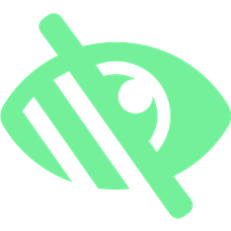

Tunnel Vision
Focus on what matters. Dim the rest.
v1.1.0
Too many distractions.
chat.tsx — Visual Studio Code
// chat.tsx
const messages = useMessages();
return <MessageList />;
Inbox · Outlook
Inbox (847 unread)
• Re: Q4 planning
• FYI — deploy broke
• Lunch Friday?
• Invoice #82839
• Calendar invite...
Twitter / X — Chrome
Trending now...
▸ Whats happening
▸ 15k posts about X
Slack
Slack · 12 channels
# general
# random
# engineering
YouTube — Microsoft Edge
YouTube · Up next
▶ Why you can't focus
▶ The pomodoro myth
Notion — Roadmap Q1
Notion / Docs
Design review v3.docx
Roadmap Q1.md
✉ 23 emails
🔔 6 notifications
💬 4 pings
Press Ctrl + Alt + T
Inbox · Slack · News
inbox · slack · news
Social
twitter · email · chat
Notes
notes · docs · random
Media
youtube · music · feeds
main.ts — Visual Studio Code
// main.ts
export function launch() {
const focus = new Tunnel();
focus.activate();
return
<Flow />
;
}
Smart. Fast. Customizable.
↕
Live intensity
Adjust darkness on the fly with global hotkeys.
Darkness
70%
⚙
Fluent Settings
Redesigned with sidebar, Mica backdrop, green accent.
General
Hotkeys
Behavior
About
Run on startup
Smooth movement
Blur background
Pause in fullscreen
✦
Acrylic blur
Optional frosted glass effect behind the dim.
Free & Open Source
github.com/voidksa/TunnelVision
Ctrl + Alt + T
Ctrl + Alt + ↑ / ↓
Ctrl + Alt + S
Music: Scott Buckley · CC BY 4.0